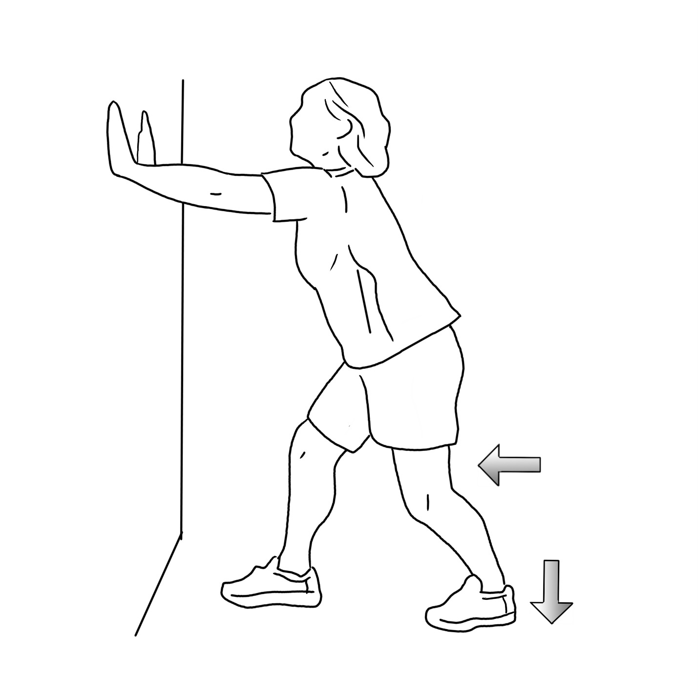
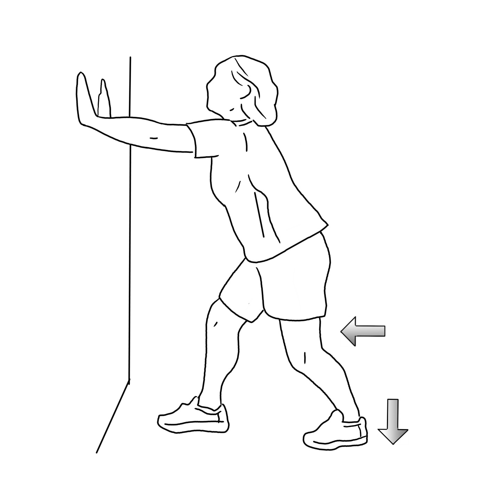

This exercise is best done on a step.
Stand with the ball of your foot on the step. Keep your knees straight,
and do not bend them! You will need something to hold onto keep your balance, like a rail, or a wall, or the back of a chair.
Let your heels drop until a stretch is felt at the back of the lower leg, and behind the knees.
Hold the stretch for 10-15 seconds.
repeat this exercise 1-3 times per day
Sit on the floor with your out in front of you. Wrap the towel around the ball of your foot just below your toes.
Gently pull on the towel, allowing your foot to slowly bend up toward your knee while keeping your knee straight.
You should feel a slight stretching feeling in the back of your leg. Hold the stretched position for 6 counts, then slowly release and repeat.
repeat this exercise 15 times per day.
Stand facing a wall from 3 feet away. Take one step toward the wall with your right foot.
Place both palms on the wall. Bend both knees and lean forward. Keep both heels on the floor.
Hold for 30 to 60 seconds. Then relax both legs. Repeat the exercise 2 times. Switch legs and repeat.
Repeat this exercise 3 times a day, or as instructed.